My work sits at the seam between systems design, technical implementation, and AI-assisted content production.
Across four independent titles and two years inside a live mobile MOBA, the constant has been this: a design is only as good as the production system that can ship it a hundred times over. That belief moved me from writing design documents to writing the tools — behaviour trees, blueprint logic, editor scripts, configuration generators, and lately generative-art pipelines with the validation gates that keep them honest.
What I want from the School of Creative Media is the other half of that loop: the theory and the critical vocabulary to ask not only can this be produced, but what is worth producing.
Framework first, features second. Instrument everything — if I cannot measure the experience, I am guessing. Automate the repetition, never the judgement — AI proposes, a human gate approves.
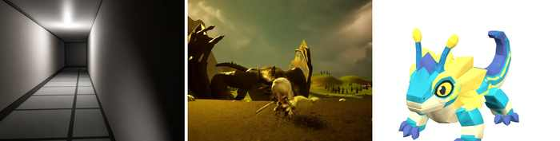
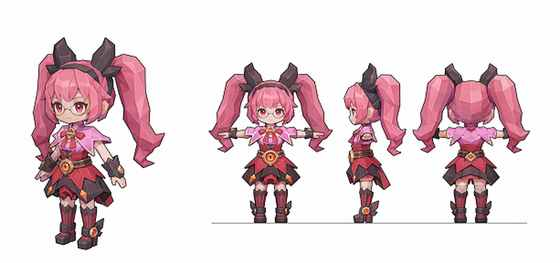
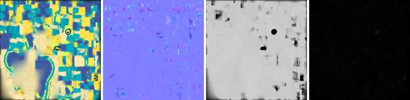
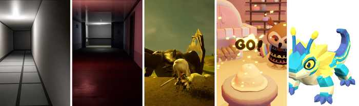
Four titles, solo and in team
Live mobile MOBA, under NDA
Concept to rigged character
Plus AI disclosure and links
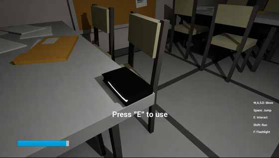
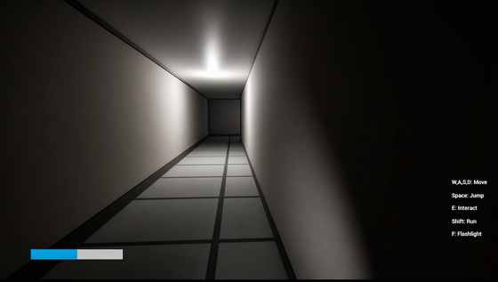
All design and Blueprint implementation mine. The verb set is deliberately small — walk, look, press E — so everything the building says, it says through what it leaves lying on a desk.
Pursuit occupies only a small fraction of the running time, by design. Dread does not come from being chased often; it comes from having been chased once and not knowing when it will happen again. The pursuer's behaviour tree also lets it lose — it disengages when the player leaves its detection region, so escape is a rule the player can learn rather than a coin flip.
A flashlight and a finite stamina bar are the only systems the player manages, and both spend fastest exactly when they are most needed. Mid-project I stopped adding features and refactored the Blueprint layer into explicit categories; iteration speed roughly doubled. Framework first, features second.
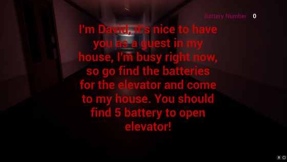
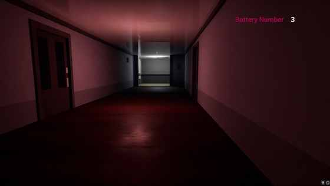
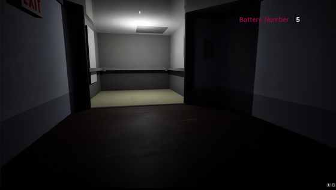
A voice calling itself your host sends you through his building to collect five batteries for the elevator. He is lying about something, and the game never says what. One number is the entire HUD — no map, no objective list, no health — so the player always knows how far along they are and never knows where they are.
Giving the player a trivial task turned out to be a stronger horror device than giving them none: with no objective they interrogate a room and find it inert; with a small one they move confidently, and the environment gets to contradict them while their guard is down. The building is lit almost entirely in one hue, so a rare cold or warm room reads as an event rather than as decor.
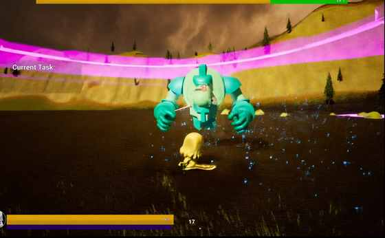
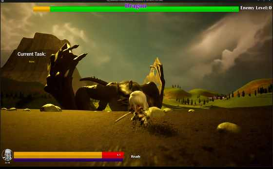
A legible power curve — clear mobs, gain XP, pick one of three upgrade cards — with five authored boss encounters. Each draw offers a flat stat, a scaling stat and a behaviour change, so every choice is a real trade rather than an obvious upgrade. The four guardians are parallel rather than sequential, letting players route around a build weakness while still paying the full toll before the Dragon unlocks.
Enemy attack and health scale by +20 % of current value every minute. Compounding pressure matches the exponential shape of the player's own upgrade stacking, which kills farming without punishing competence. Translating a 2D horde rhythm into 3D changed the read — the crowd is no longer visible at a glance, so telegraph windows widened and upgrade feedback moved into VFX and audio rather than numbers.
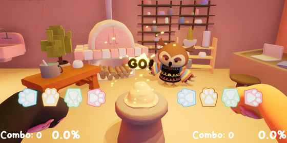
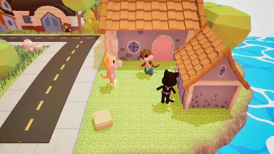
A university capstone shipped free-to-play on Steam by Shatter Studios: two players, two controllers, two cats learning pottery. My ownership was animation production and core interaction design.
The defining design problem is that both players act on the same pot, so individual accuracy had to stay legible while the outcome stayed shared — each player gets a private combo readout while the pot on the wheel carries the joint result. Notes are arranged radially around the wheel rather than falling down a lane, which keeps both players on one focal point.
Players judge themselves on what they see and hear before they read a number, so every input state has its own animation and audio signature and the character's recovery timing is the judgement display. Missed beats deform the pot and thin the arrangement instead of halting the run: losing should still sound like a song. The animation set was blocked in Maya, cleaned in MotionBuilder, and authored against a tempo grid across seven original songs — a clip that reads beautifully and lands two frames late is a bug in a rhythm game.
Under NDA No proprietary screenshots, configuration data, source assets or unreleased content appear anywhere in this portfolio.
Companion characters must idle, wander, react and perform one-off beats while the player browses menus. The failure mode is never a missing animation; it is a bad seam — a character snapping mid-stride because two systems each believed they owned it that frame.
I enumerated every promised behaviour, cut the state list to the smallest set that could express all of them, and wrote the transition matrix including the illegal transitions — which is where most of the design turned out to live. Exactly one state drives the character per frame; every other system requests rather than sets. Each transition received an authored blend-out specified against the animation team's actual clips, and interrupts resolve by declared priority.
Out-of-match presentation now reads as continuous motion rather than a sequence of clips. A state machine, I learned, is a contract about who is allowed to lie to the player.
I owned the main flow for character creation and outfit combination, the configuration schema that gave art and design a single source of truth, and the pre-launch combination sweep.
The design cost of a cosmetic system is never in any one item — it is in the product of the columns. Slots × variants is a surface that must all be legal, renderable and non-clipping, so we defined compatibility classes that new items inherit on arrival, rather than blacklisting broken pairs one at a time.
Cosmetic systems look like content and behave like infrastructure. The right question at spec time was never what an outfit should look like, but what it will cost to add the two-hundredth one.
I adapted a competitive hero roster into a fast entertainment battle-royale mode, retuning cooldowns, costs and trigger conditions through hero logic graphs and buff triggers. The rule I worked to: change the rhythm, never the fantasy. A player who mains a hero should still recognise their hero; what changes is how often they get to be them.
A significant finding: the monster AI I was asked to modify was not driven by the visual logic graphs at all, but by behaviour-tree assets referenced through a path field in a configuration table. The graphs were vestigial and edits to them did nothing. In a decade-old live codebase, the documented system and the running system are different systems.
For multi-phase bosses I drove transformations through the buff layer rather than spawning a new entity, which keeps threat, targeting and aggro intact across a phase change, so the encounter never resets its social contract with the players fighting it.
I built an AI-assisted configuration pipeline: hand-authored exemplars, extract the pattern and its constraints, batch generation, then a four-stage validation gate — schema, reference integrity, rule check, spot playtest — before merge.
Generation was the cheap part. The expensive part was answering "how do I know it isn't wrong?" at a scale where I can no longer read every entry. Two rules made it work: never hand-patch a generated artefact, because a one-off fix hides a systematic defect and the failure should instead be pushed back into the pattern and fixed 110 times; and keep a human at the end — the gate rejects, only I approve.
Defining that gate is writing down what the design actually requires. It was the most rigorous design document I have ever written.
The hard problem is never getting one good asset. It is getting the hundredth one to belong to the same world as the first — and to survive rigging.
My pipeline is built around a single rule: lock a style anchor once, then validate every later stage against it, so drift is caught at the stage that caused it rather than discovered at rigging. Parts are decomposed before generation — hair, garment, accessory, footwear as separate passes — which produces components that swap and re-use across characters instead of one un-editable blob.
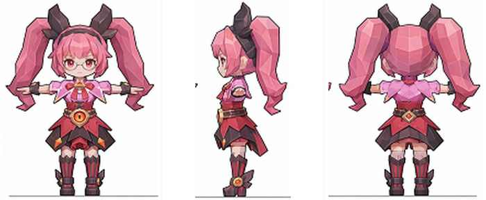
Asking a model for a three-view sheet in one image is the obvious approach and it fails reliably: adjacent panels contaminate each other, and once cropped the front and side no longer describe the same character. Generating each view as its own pass against a shared anchor produces views a 3D generator can actually reconcile.
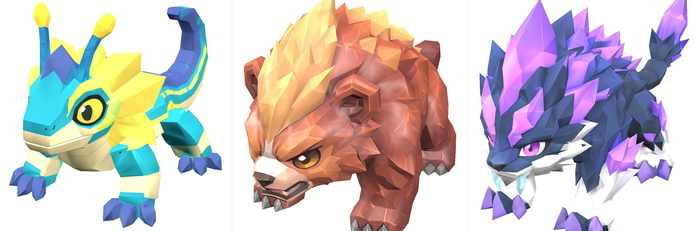
Generation is asynchronous by nature, so the middleware is a submit / poll / fetch loop with signed requests and back-off retry — transient overload is an expected state, not an error. ComfyUI runs locally on a 12 GB consumer GPU, which forces honest engagement with batching and memory limits instead of treating generation as an infinite cloud resource.
The honest limit: these tools reach roughly 70 % in minutes and then stop. Silhouette correction, topology that survives deformation and weight painting remain entirely human — and they are exactly where an asset becomes either good or unusable. My interest is in designing that handoff, not in pretending it does not exist.
Never generate a dressed body as one mesh. It looks right and deforms wrong — the garment inherits the body's weights and shears at the shoulder. Base body, garment shell and sleeves each need their own weights.
Thicken before generating, not after. Cloth and hair edges come back as zero-thickness shells and vanish under normal-based shading.
Normalise scale on arrival. Every generated part returns in its own units; making this mandatory rather than remembered removed a whole class of silent failures.
Never hand-patch a generated artefact. A one-off fix hides a systematic defect — push the failure back into the pattern so it is fixed everywhere at once.
Product, design, implementation and operations, solo — schedule management, a virtual-currency prediction market with pari-mutuel odds, an auditable ledger, admin tooling and analytics. It ran a full competitive season in production.
Three decisions I would defend. Money is never a float: string storage, decimal arithmetic, one wallet service every balance change must pass through, and a signed ledger entry per movement — auditable by construction rather than by discipline. The deploy gate is the quality bar: 70 smoke tests run on every push, and red means it does not ship. AI proposes, a human commits: a vision model reads result screenshots to speed settlement, but its output lands in a staging buffer behind a confirmation dialog and never writes to the database, returning "unknown" rather than guessing.
Real users double-click, which took three layers to handle — front-end submit locking, a server-side duplicate window, and a database uniqueness constraint as the final guarantee. A design that only works when the user behaves is not a design.
A personal research project: 79 atomic memories, 128 weighted semantic connections and 16 higher-order insights distilled from dense clusters, with links that strengthen when traversed and decay when unused.
Flat search returns what is similar; an explicit graph returns what is relevant but not obviously similar. Two ideas I am proud of: new material lands in a quarantine and is promoted only after passing a quality gate — most systems optimise retrieval and almost none defend ingestion, yet a knowledge base degrades from what you let in — and queries run a cheapest-first cascade, so most are answered before reaching a stranger's page.
Section 03 uses generative image and image-to-3D models as production tools, which is the explicit subject of that work; the pipeline design, part decomposition, retopology, rigging, weight painting and all in-engine results are mine, and generated images are presented as generated images. The configuration pipeline in section 02 used AI-assisted generation behind a validation gate I designed, with nothing shipped unreviewed. The game projects in section 01 used no generative AI — screenshots were upscaled with AI super-resolution for print clarity only, content unchanged. This document was written by me and its layout is hand-coded.
Section 02 describes work at Tencent TiMi Studio Group under a non-disclosure agreement; no proprietary screenshots, configuration data or unreleased content appear anywhere in this portfolio, and all diagrams there were re-drawn by me generically. Further commercial pipeline work is withheld for the same reason. Dream, 0423 and Jim's Adventure are solo projects with selected art and audio assets sourced or outsourced. Clay Beats is a team capstone credited to the full team; my ownership was animation production and core interaction design.
Gameplay footage, all three solo titles —
flypigkun.github.io/portfolio/videos
Clay Beats on Steam —
store.steampowered.com/app/3492920
Shen Linkun 沈琳昆 · shenlinkun829@gmail.com